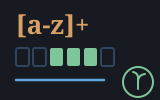
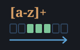

A reckoner seed: regex at the keyboard — machines/seeds/seedregex.shoddy

seedregex bridges regex into the
reckoner: RXTEST RXFIND RXFINDALL RXGROUPS RXREPLACE RXSPLIT RXQUOTE
RXWHY. Eight words, all pure, so a calculator holding a string can ask
a stated rule about it:
"2026-08-08" "^\d{4}-\d{2}-\d{2}$" RXTEST \ True
"GET 200 /index.html" "^(\w+) (\d+)" RXGROUPS
"a, b,,c" ",\s*" RXSPLIT
"banana" "[aeiou]" "-" RXREPLACE \ b-n-n-Every one of them takes the pattern as a string and every one of them is guarded, so a mistyped pattern is a refusal on the line you typed it — never a dead session.
The reckoner already has SPLIT, INSTR and
REPLACE, and all three are literal. That is fine until the thing
you are looking for is not a fixed string: the fields in a log line, the
numbers scattered through a paragraph, the parts of a version, whitespace
that might be one space or four. Those are the moments a person at a prompt
reaches for a pattern, and until now the answer was to leave the prompt.
The one that pays for the rest is RXWHY. It is the only word
here about the pattern rather than about a subject: it answers an
empty string when the pattern reads and the reason with its offset when it
does not, so a person can find out what is wrong with a pattern without
having to have a subject to try it on.
"(a" RXWHY \ REGEX: UNMATCHED ( - THIS GROUP NEVER CLOSES (at 1)
"(a)\1" RXWHY \ REGEX: BACKREFERENCES ARE NOT SUPPORTED - ... (at 4)The second of those is the point of the whole design showing through at the keyboard: a construct past the ceiling is named rather than reported as an unexpected character, so someone who typed a backreference out of habit learns why it will never work here instead of wondering what they mistyped.
And there is the tape. RckTape is a
List Of String, so RXFINDALL at a prompt makes the
session's own record searchable — a calculator that can grep
itself.
The pattern is a string, and it is compiled on every
call. That is a deliberate cost, and it is worth knowing about
rather than discovering. A compiled program is a machine type, and
Cell in cuttle has eight kinds of
which none is one; adding a ninth would change the file every seed includes,
and would need a text form for the tape, an equality and a rendering for a
value that has none of those naturally. Against that: a line is typed
by a person. The pattern is a dozen characters and the compile is
microseconds against a keystroke. A program that wants the pattern compiled
once uses RxRead and the machine directly, which is what the
machine is for.
What the bridge loses, said out loud.
RXGROUPS answers a LIST of STRINGs, so a group that did
not participate arrives as an empty string — exactly the
distinction regex is built to preserve, flattened by
the Cell type on the way to the stack:
"b" "(a)|(b)" RXGROUPS \ { "b" "" "b" }Nothing in that list says which empty string is a group that matched
nothing and which is a group that was never entered. In the machine those are
Some("") and None() and they stay apart;
RxGroup is where the distinction still lives. A bridge that
quietly flattens a type is the thing worth writing down.
RXFIND pushes two cells, always. The 1-based
start and the length, and 0 0 where there is no match. A word
that pushed a variable number of cells would break UNDO's
accounting, and 0 is a start no real match can have because the
subject is 1-based.
RxReplaceWith is not seeded. It takes a
quotation per hit and a Cell cannot carry one. Running a
user-defined reckoner word per match is a real idea and its own proposal
— it needs a seed to call back into RckEval mid-word,
which no seed does today.
Nothing here can end a session, and that is not this seed's
achievement. regex has not one call to
Error in it, so there is no aborting path into the machine for
this seed to have to find and avoid. Every guard below is therefore about the
shape of the stack — a cell that is not a STRING — plus one match
on RxRead, and that is the whole of it.
| Word | Effect | What it does |
|---|---|---|
| RXTEST | ( s pat -- flag ) | Whether pat matches anywhere in s. |
| RXFIND | ( s pat -- at len ) | The leftmost match's 1-based start and its length; 0 0 when there is none. |
| RXFINDALL | ( s pat -- list ) | Every non-overlapping match, in order, as a LIST of STRINGs. |
| RXGROUPS | ( s pat -- list ) | The first match as a LIST: the whole match, then one item per group. An unset group arrives as an empty string. |
| RXREPLACE | ( s pat rep -- s ) | Every match replaced by rep, where $0 to $9 stand for the match and its groups and $$ is a literal dollar. |
| RXSPLIT | ( s pat -- list ) | s cut apart at every match, leading and trailing empty pieces kept. Capturing groups are not emitted. |
| RXQUOTE | ( s -- pat ) | s escaped so that, used as a pattern, it matches itself and nothing else. |
| RXWHY | ( pat -- s ) | An empty string if pat reads; otherwise why it does not, and where. |
RXWHY is the one word here that does not refuse a bad
pattern. It reports one, which is the whole reason it exists.
| User | How | |
|---|---|---|
| halifax | RckSeedRegex folds the eight words in last, after seed-https and before the shell's own, which is where they appear in WORDS. | |
| sparky | Sparky folds it too, so a model calling eval reaches the same words halifax puts at a prompt. |
| Machine | How | |
|---|---|---|
 | regex | The domain this seed bridges: RxRead and the whole match surface behind it. |
| cuttle | The Cell type — and the reason the pattern arrives as a STRING rather than as a compiled program. | |
| reckoner | RckReg, RckSeeding and the argument readers every registered word is built from. |